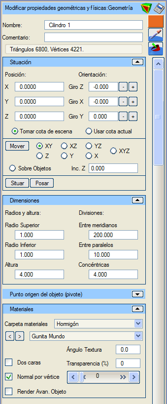
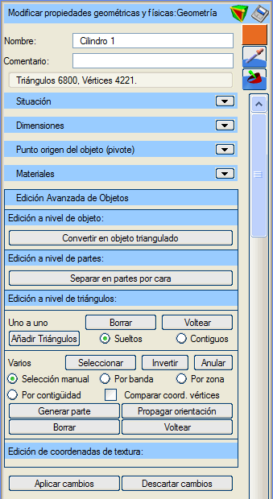
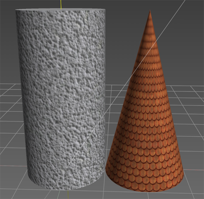

| |
|
Tüp
|
|
Genel Bilgiler Bu menüde, daha önce oluşturulmuş bir tüpün tüm özellikleri ayarlanabilir. Seçenekler İsim: Tüpü bir isimle tanımlamayı sağlar. Yorum: Bu tüp nesnesine açıklayıcı bir yorum eklemeyi sağlar.  Tüp nesnesinin "Gelişmiş Düzenleme" moduna girer. Tüp nesnesinin "Gelişmiş Düzenleme" moduna girer. Tüp nesnesini çeşitli formatlarda kaydetmeyi sağlar. Tüp nesnesini çeşitli formatlarda kaydetmeyi sağlar. Ardından 3D görüntüleyicide seçilecek pikselin rengini nesneye atar. Ardından 3D görüntüleyicide seçilecek pikselin rengini nesneye atar. Ardından 3D görüntüleyicide seçilecek malzemeyi nesneye atar. Ardından 3D görüntüleyicide seçilecek malzemeyi nesneye atar.Renk: Renk düğmesi (bu durumda mor) aracılığıyla tüp için bir renk belirtilebilir. Üçgenler ve köşe noktaları: Tüpün üçgen ve köşe noktası sayısını bildirir. Konum (X, Y, Z): tüpün tam konumunu belirtir. Yönelim (X döndürme, Y döndürme, Z döndürme): tüpün her bir eksen etrafındaki dönüşünü belirtir. Dönüşler Z->X->Y sırasında uygulanır. Z ekseni etrafındaki dönüş (azimut, heading) -400º ile 400º arasında değerler alır. X ekseni etrafındaki dönüş (pitch) -360º ile 360º arasında değerler alır. Y ekseni etrafındaki dönüş (roll) -360º ile 360º arasında değerler alır. Sahne kotunu al: 3D görüntüleyicide tüpü hareket ettirirken veya konumlandırırken, tüpün sahnedeki nesnelerin üzerine yerleşeceğini belirtir. Mevcut kotu kullan: 3D görüntüleyicide tüpü hareket ettirirken veya konumlandırırken, pozisyona Istram'ın "Mevcut Kotu"na karşılık gelen kot atanır. Taşı (XY, XZ, YZ, X, Y, Z, XYZ, Nesneler Üzerinde): Bir tüpü 3D ortamda imleçle sürükleyerek hareket ettirmeyi sağlayan "taşıma" modunu etkinleştirir. Tüpün hareket ettirilmek istendiği boyutlar kısıtlanabilir. "Nesneler Üzerinde" modu, tüpü imlecin hareket ettiği nesnenin yüzeyine yerleştirir. Taşıma modundan "Esc" tuşuna basarak veya bu düğmeye tekrar basarak çıkılır. Z Artışı: Tüpün konumlandırıldığı kota eklenecek bir mesafe tanımlar. Konumlandır: Bir tüpü imleçle seçilen belirli bir noktaya yerleştirmeyi sağlar. Yere Oturt: Tüpün sınırlayıcı kutusunun altındaki "zemine" en iyi şekilde uyum sağlaması için tüpün dönüş açılarını yapılandırır. Yarıçaplar ve yükseklik: Tüpün tam boyutlarını belirtmeyi sağlar. Alt yarıçap, üst yarıçap ve yükseklik belirtilir. İki yarıçap farklı olabilir, bu şekilde kesik koniler oluşturulur. Eğer üst yarıçap veya alt yarıçap 0 ise bir koni oluşturulur. Bölümlemeler (Meridyenler arası, Paraleller arası, Eş merkezli): Tüpün daha gerçekçi bir geometri ve aydınlatmaya sahip olmasını sağlamak için yüzeyini ızgaralara bölmek için kullanılır. Pivot seçenekleri, tüpün hangi noktasının konum koordinatlarına yerleştirileceğini belirtir. Şu seçenekler olabilir: -Sınırlayıcı kutunun taban merkezi (varsayılan seçenek). -Sınırlayıcı kutunun merkezi. -Sınırlayıcı kutunun minimum koordinatları. -Minimum koordinatlara göre göreceli pivot (X, Y, Z). Sınırlayıcı kutunun minimum koordinatları olarak sol alt köşe alınır. Kullanıcı tanımlı bir pivot belirtilirken, sınırlayıcı kutunun köşesine göre göreceli öteleme koordinatları (X, Y, Z) girilerek veya nesne üzerine tıklanarak yapılabilir. Bu durumda, ya "Pivotu taşı, geometriyi koru" seçeneği işaretlenerek pivot taşınabilir ya da "Minimum koordinatları taşı, pivotu koru" seçeneği ile iç koordinatları değiştirilerek geometri taşınabilir. Malzeme Klasörü: Tüpe atanacak malzemelerin aranacağı sınıflandırma klasörünü seçmeyi sağlar. Seçilen klasöre göre aşağıdaki malzeme seçici doldurulur. Malzeme Seçici: Tüpe uygulanacak malzemeyi seçmeyi sağlar. "<" ve ">" düğmeleri, seçilen klasördeki malzeme listesini sırayla gezinmeyi sağlar. Doku Açısı: Seçilen malzeme bir doku içeriyorsa, dokunun uygulama düzlemi üzerindeki yönelimi değiştirilebilir. Varsayılan değer 0.0º'dir. Çift Taraflı: Bu kutu işaretlendiğinde, tüpün üçgenlerinin her iki yüzden de boyanacağı belirtilir. Bu sadece kamerayı tüpün içine yerleştirecekseniz faydalıdır. Üçgenleri çift taraflı boyamak zaman maliyetini artırır. Varsayılan olarak işaretli değildir. Şeffaflık (%): Tüpün şeffaflık yüzdesini belirtir. Varsayılan olarak şeffaflık %0'dır, yani opaktır. Bu değer, altındaki yatay kaydırıcı ile de kontrol edilir. Köşe Başına Normal: Bu kutu işaretlendiğinde, nesnenin her bir köşe noktasında hesaplanmış bir normal vektörü olduğu belirtilir; işaretlenmezse her üçgen için bir normal vektörü hesaplandığı belirtilir. Bu nesnede, bu seçenek işaretliyken yan yüzlerin kenarları yumuşatılmış görünür. Varsayılan olarak işaretlidir. Nesnenin Gelişmiş Render'ı: Bu seçenekle, tüpün oluşturulması için alışılmış OpenGL fonksiyonları yerine "shader"ların kullanılması belirtilir. Bu seçeneğin doğru çalışması, grafik donanımının bu "shader"ların kullanımını desteklemesine bağlıdır. Varsayılan olarak işaretli değildir. Gelişmiş Düzenleme  Burada, kürelerin gelişmiş düzenlemesinin özel seçenekleri veya özellikleri yorumlanmaktadır. Nesne düzeyinde, tüm küreyi etkileyen eylemler gerçekleştirilir. Üçgenlenmiş nesneye dönüştür: Kutuyu normal bir 3D nesneye dönüştürür, artık kutu olarak değil, onu tanımlayan üçgenler bütünü olarak kabul edilir; diğer özellikler korunur. Özellikler menüsü bir 3D nesnenin menüsüne dönüşür. Parça düzeyinde, tüpün parçalarını etkileyen eylemler gerçekleştirilir. Yüze göre parçalara ayır: Tüpü normal bir 3D nesneye dönüştürür, artık tüp olarak değil, onu tanımlayan üçgenler bütünü olarak kabul edilir, ancak bu üçgenler yüzlere göre (silindir veya koni olmasına bağlı olarak sırasıyla 3 veya 2) nesne parçaları halinde gruplandırılır; diğer özellikler korunur. Özellikler menüsü bir 3D nesnenin menüsüne dönüşür. Üçgen düzeyinde, tüpün üçgenleriyle ilgili eylemler gerçekleştirilir. Üçgenleri oluşturan, silen veya yeniden düzenleyen herhangi bir eylem, tüp nesnesinin bu özelliğini kaybetmesine ve bir 3D nesne olmasına neden olur. Özellikler menüsü buna göre değişir. Bir nesnenin tüp olması, programın ve dolayısıyla kullanıcının, nesneyle çalışmasına ve tüp olma durumunu dikkate alarak özelliklerini değiştirmesine olanak tanır: doku kaplama, yüzlerin bölünmesi ve aydınlatma, tüp olmasına uygun şekilde ele alınır. 
Resimde, menü resminde tanımlanan tüp ve üst yarıçapı 0 olan bir tüp olarak yapılmış bir koni gösterilmektedir. |